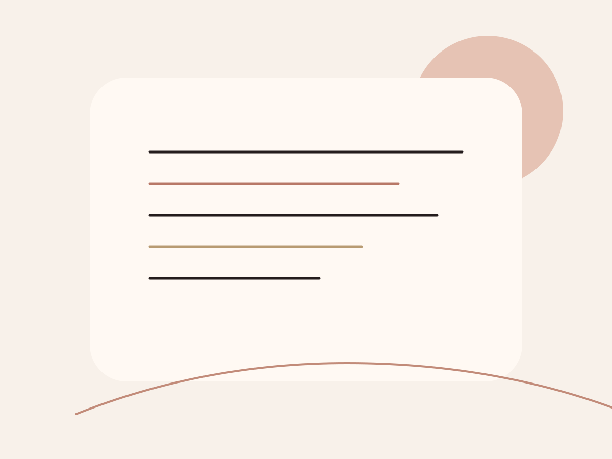

Klare Antworten vor Ihrem Besuch
Hier finden Sie die häufigsten Fragen zu Terminen, Vorbereitung, Pflege danach, Gutscheinen und der Organisation rund um Ihren Besuch bei Maison Aveline.

Alles Wichtige auf einen Blick
Wie läuft ein erster Termin bei Maison Aveline ab?
Ihr erster Termin beginnt mit einer kurzen Analyse Ihres Hautbildes, Ihres Anlasses oder Ihrer Wünsche. Anschließend empfehlen wir das passende Treatment, erläutern den Ablauf und stimmen Add-ons nur dann ab, wenn sie wirklich sinnvoll sind.
Wie früh sollte ich vor dem Termin da sein?
Wir empfehlen, etwa zehn Minuten vor Beginn anzukommen. So startet Ihr Termin entspannt, ohne dass wertvolle Behandlungszeit verloren geht.
Wie sind die Stornobedingungen?
Absagen oder Umbuchungen sind bis 24 Stunden vor Ihrem Termin kostenfrei möglich. Bei späteren Änderungen behalten wir uns eine Ausfallpauschale vor, da reservierte Zeitfenster kurzfristig nur schwer neu vergeben werden können.
Welche Behandlung eignet sich für den ersten Besuch?
Wenn Sie uns noch nicht kennen, empfehlen wir meist das Maison Signature Ritual oder den Glow Reset. Beide Leistungen geben uns genug Raum für Analyse, Behandlung und eine sinnvolle Empfehlung für weitere Schritte.
Was sollte ich vor Brows- oder Lash-Terminen beachten?
Bitte erscheinen Sie möglichst ohne starkes Augen-Make-up und informieren Sie uns über aktuelle Sensibilitäten oder frische kosmetische Eingriffe im Augenbereich.
Welche Pflege ist nach einem Skin Ritual wichtig?
Je nach Treatment empfehlen wir eine ruhige Nachpflege mit Feuchtigkeit, SPF und gegebenenfalls dem vorübergehenden Verzicht auf starke Wirkstoffe. Die passende Empfehlung erhalten Sie direkt nach Ihrem Termin.
Bieten Sie Gutscheine an?
Ja. Sie können sowohl feste Treatments als auch freie Beträge verschenken. Gutscheine werden hochwertig verpackt und eignen sich besonders für Geburtstage, Bridal Moments oder Business-Geschenke.
Sind Behandlungen auch für sensible Haut geeignet?
Ja, sofern wir vorab ausreichend Informationen zum Hautzustand erhalten. Unsere Treatments lassen sich an empfindliche, gestresste oder barriereschwache Haut anpassen.
Wenn Ihre Frage hier nicht beantwortet wurde, beraten wir Sie gern persönlich.
Besonders bei Hautthemen oder Event-Timings lohnt sich eine kurze individuelle Rückfrage.